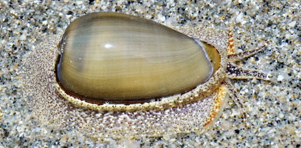
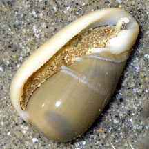
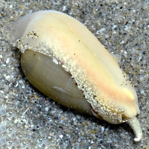
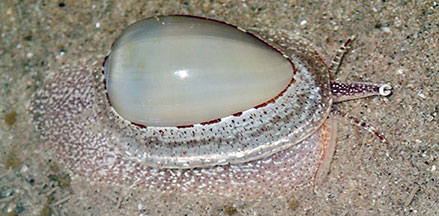

|
|
| shelled snails text index | photo index |
| Phylum Mollusca > Class Gastropoda |
| Margin snails Cryptospira sp. Family Marginellidae updated Dec 2025 Where seen? Seen twice on sandy shores at Changi East and East Coast. Features: About 2cm. Smooth tear-drop shaped smooth shell. The open has 'plaits' near the tip. The living animal has a large foot with mottled markings, a long siphon and eyes on stalks. |
 Changi East (Lost Coast), Dec 25 Photo shared by Loh Kok Sheng on facebook |
 |
 |
 East Coast (PCN), May 21 Photo shared by Toh Chay Hoon on facebook. |
| Family
Marginellidae recorded for Singapore from Tan Siong Kiat and Henrietta P. M. Woo, 2010 Preliminary Checklist of The Molluscs of Singapore. in red are those listed among the threatened animals of Singapore from Davison, G.W. H. and P. K. L. Ng and Ho Hua Chew, 2008. The Singapore Red Data Book: Threatened plants and animals of Singapore.
|
| Thanks to Toh Chay Hoon for obtaining identification for the snail. References
|